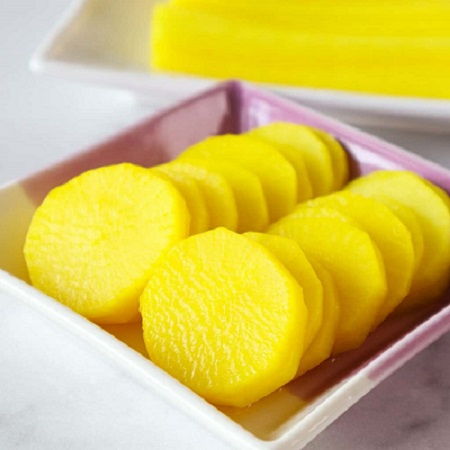

Korean Pickled Radish
Korean Pickled Radish

Korean Pickled Radish , known as Damunji is one of Korea's Banchan , "side-dishes". These side-dishes are served with each main meal, and it is state that the kings of the Joseon dynasty were served 12 different banchan per meal.
Danmunji is one of my favourite banchan!
Ingredients
- 1 cup rice vinegar
- 1 1/2 cup water
- 1/2 cup sugar
- 2 tsp salt
- 1/4 tsp black pepper
- 1/4 tsp turmeric
- 600g daikon radish
Directions
- Slice radish into medium thin circle slices. Place into a large glass bowl.
- In a saucepot, mix rice vinegar, water, sugar, salt, blackpepper, and turmeric. Bring to a boil. Turn off heat.
- Pour mixture over radish. Mix well.
- Let cool completely.
- Cover and store in the refrigerator for 24 hours.
- Serve. Last one month.